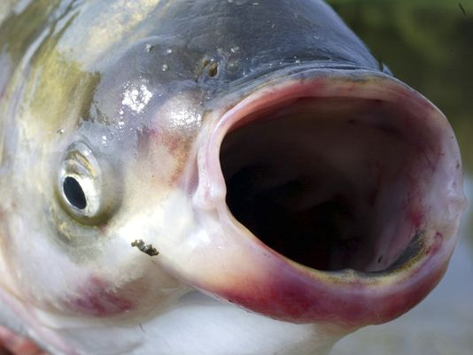

1.1.3 baby adventure. This is a scratch script of myself moving across the
screen while rotating. Hit space and the reverse action will occur. 1.1.7 Scratch game project. Made by Ben Kong and Sean Cornish.
This game is a 2 player shooter in 8-bit fashion. try to kill your opponent
and be the last man standing. players play with up, left, and right through
an obstacle course of fun and amazement. 1.1.7 game project backlog. list of tasks numbered by priority. This list includes
specific notes on each aspect of the game, and the current status of the objectives we set for ourelves.

Interactive English Python Project. This project is a research paper done in my english class on the invasion of asian carp in the U.S..
This report will inform readers in all areas of the issue and do so through a fun and interactive python program.
Check out this project to learn more about asian carp and have some fun using simple python functiomns and decisions.
To see the methodology behind the program in a simple and straghit forward flow chart, click the image above